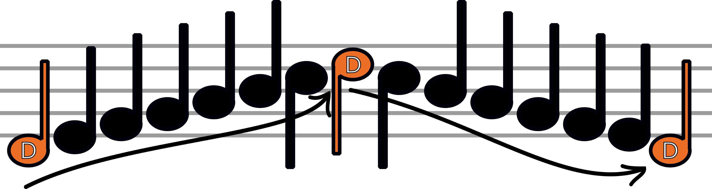

Yes, that's right. There are only seven notes in music! They are: A, B, C, D, E, F and G.
Let's see where each one is placed on a music sheet.
~Treble Clef Notes~
Because we are pretending that the treble clef is in front of aaaall these notes, we can see that the note G is on the second last line. That means that all the other letters are falling in to their place above and below our little G.
Because musical notes only use the first seven letters of the alphabet, we just repeat them when we run out of letters. After G, we start from A again as we go up the lines. If we are going down, we count down from G once we end up at A again.
Scales and Chords
Isn't a scale that thing that weighs ingredients? Well technically yes, but not when it comes to music.
Scales in music means traveling up and down the notes, and a chord is playing three notes (that are two notes up from each other) at the same time.
Confused? Me too. Let's find out more!

~Running Out Of Lines~
What happenes if you choose a note that goes outside the lines? The answer is simple really: just draw more!
When you try to go lower or higher than the five manuscript lines on the page, it's okay to draw little lines either above or below where the ogriginal five are. Just make sure that you leave the right amount of lines and spaces to reach the note you want to play.